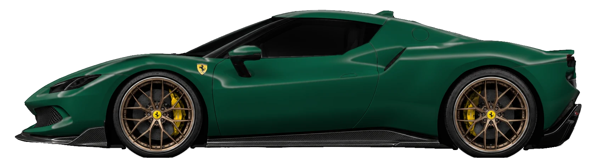
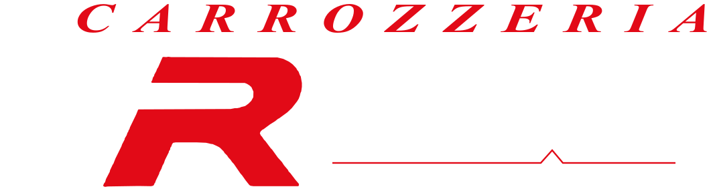
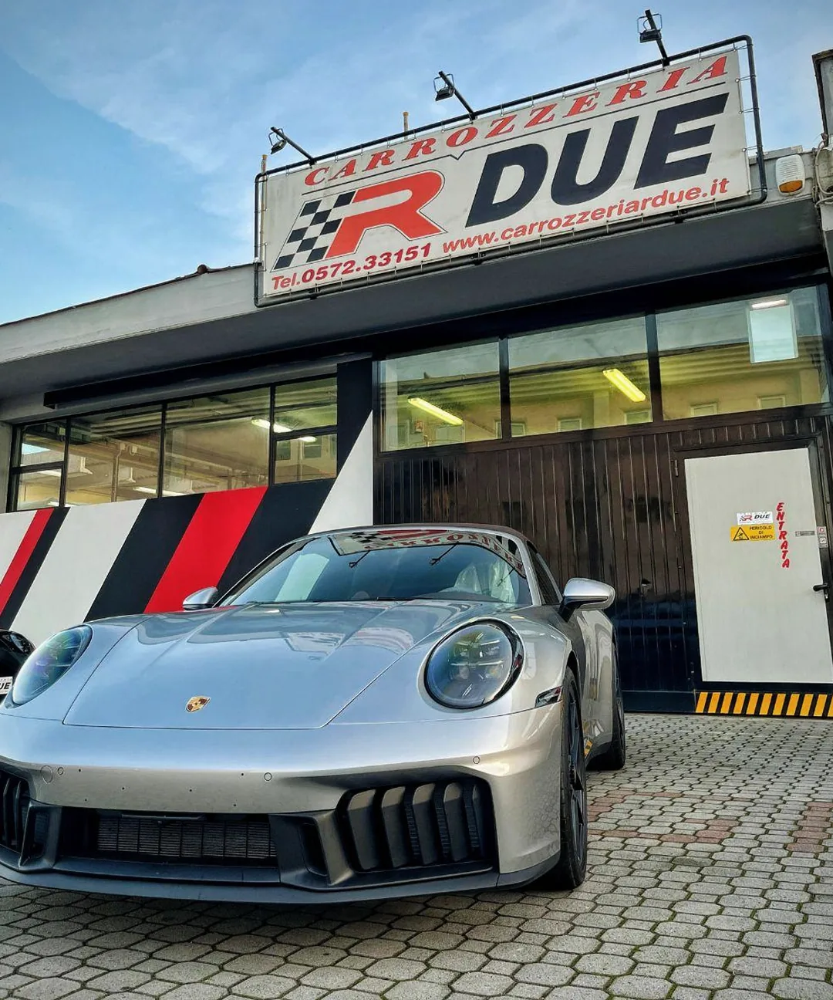
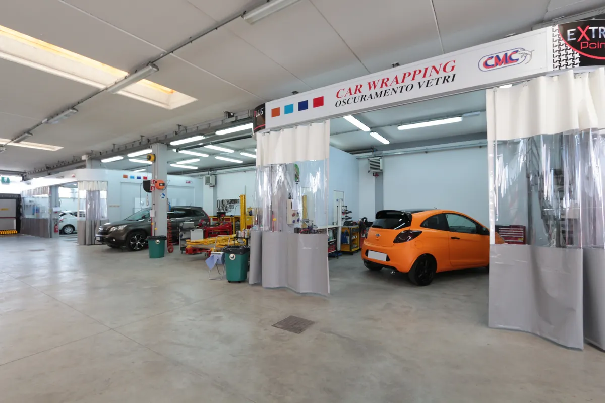
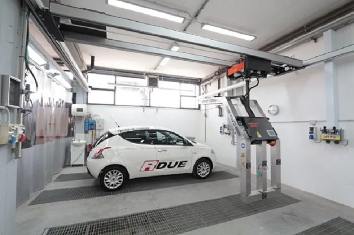
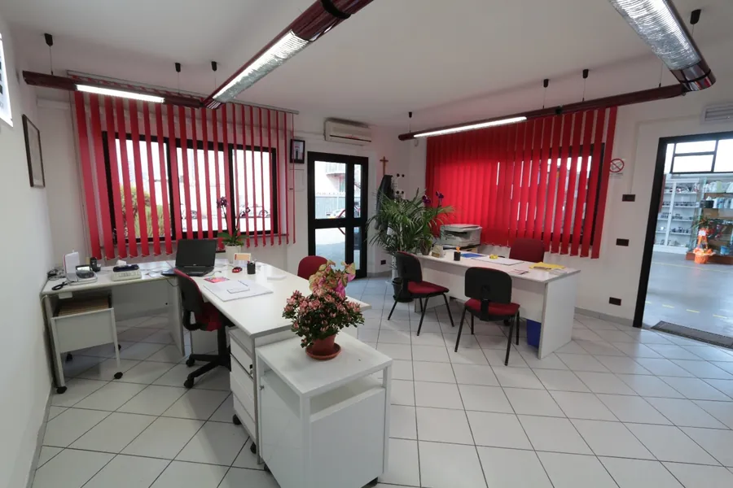

Due fratelli. Un unico risultato.
La tua auto, come non l’hai mai vista.
Se non piace a noi, da qui non esce.
Damiano e Siriano Fedi. Dal 1980. A Pescia, alle Macchie di San Piero.
Una sola passione.
Le auto. Damiano e Siriano Fedi ne hanno fatto un mestiere, dal 1980. Questa Ferrari è di serie. Ancora per poco.
Qualsiasi auto.
Qualsiasi danno.Dal graffio al danno grave ripariamo ogni marca, con qualsiasi assicurazione. La pratica la seguiamo noi: tu devi solo tornare a riprenderla.
650 metri quadri.
Niente a metà.L'11 aprile 2015 abbiamo aperto la sede nuova a Pescia, alle Macchie di San Piero. Tutto al coperto, tutto nello stesso posto.
Il colore non si indovina.
Si misura.Lo spettrofotometro legge la tinta esatta e verniciamo all'acqua, in cabina. Colore originale o un altro: scegli tu.
Riparare è solo l’inizio.
Pellicole protettive, wrapping, detailing, nanotecnologia, vetri, cerchi, restauro. Dodici divisioni, tutte qui.
Rispondiamo
solo a te.Nessuna convenzione con le assicurazioni: rendiamo conto solo a chi ci porta l'auto. Due fratelli, una garanzia.
Questa Ferrari è una ricostruzione. I lavori veri sono qui.
Adesso dicci che non ti piace.
Cerchi, assetto, colore, fanali, splitter e pinze, tutto sulla stessa Ferrari. Questa che gira è una ricostruzione. I lavori veri sono più sotto.
Un’auto si può rifare. Un cognome no.
Damiano e Siriano Fedi sono due fratelli. Della passione per le auto hanno fatto il loro mestiere, e dal 1980 ci mettono il cognome su ogni macchina che esce da qui.
Per questo la cura dei particolari non è un extra: ogni lavoro si fa a regola d'arte e di quello che facciamo rispondiamo noi, di persona.
Due fratelli, una garanzia.
Dodici divisioni. Un solo livello.
Ogni foto è un lavoro recente fatto qui da noi. Tocca una scheda per vedere tutto quello che comprende.
Il risultato lo vedono tutti. Il lavoro lo vedi qui.
Tre lavori veri, fotografati qui da noi mentre li facevamo.
Com’è entrata. Com’è uscita.
Auto vere, lavori veri. Ogni auto arriva com'era e cambia sotto i tuoi occhi.
Hai fatto un incidente? Chiama prima noi.
Prima di passare dall'assicurazione. Ti diciamo come muoverti.
- 1
Mettiti al sicuro
Fermati in un punto sicuro. Se ci sono feriti chiama il 112.
- 2
Compila il modulo
Constatazione amichevole firmata da entrambi, se si può. Fai qualche foto ai danni.
- 3
Chiama Damiano o Siriano
348 0151978 o 348 0151979. Se l'auto non si muove, organizziamo il recupero.
- 4
Della pratica ci occupiamo noi
Gestione completa del sinistro, dal ritiro dell'auto alla riconsegna.
- Il carrozziere lo scegli tu
- La tua compagnia può consigliarti una carrozzeria, ma la scelta resta tua. Se la polizza ha clausole particolari, portala e la guardiamo insieme.
- Zero rischi & zero anticipi
- La nostra formula per chi ha ragione: ritiri l'auto senza anticipare i soldi. Le condizioni te le spieghiamo in sede.
- Auto di cortesia
- Disponibile secondo regolamento. Chiedi quando chiami.
- Certificato di garanzia
- Sui lavori eseguiti viene rilasciato il certificato di garanzia.
Professionisti seri, affidabili e molto bravi nel loro mestiere.
Officina organizzata, gentili e disponibili.
Personale preparato e competente.

Macchie di San Piero, Pescia.
- 1980l'anno di partenza
- 650 m²coperti
- 2015la sede nuova, inaugurata l'11 aprile
- 12divisioni di lavoro
Banchi dima, spettrofotometro, cabina di verniciatura, robot a infrarossi, vernici all'acqua. Associati Federcarrozzieri e Oxygen Sinistri.



Portala da noi. Poi dicci se la riconosci.
Orari
Lunedì - venerdì
8:30-13:00 e 14:00-19:00
Sabato mattina su appuntamento
Dove
Via Caravaggio 2, 51017 Pescia (PT)
Zona industriale Macchie di San Piero